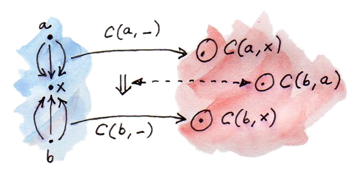

17 การEmbeddingของYoneda (Sketch)
เราได้เห็นก่อนหน้านี้ว่าในตอนที่เราได้ให้วัตถุ\(a\)ในcategory\(\textbf{C}\)คงที่ การโยง\(\textbf{C}(a,-)\)คือfunctor(แบบcovariant)จาก\(\textbf{C}\)ไปpy’\(\textbf{Set}\)อย่าง
\[ x\rightarrow\textbf{C}(a, x) \]
(Codomainคือ\(\textbf{Set}\)เพราะว่าhom-set\(\textbf{C}(a, x)\)นั้นคือset) เราเรียกการโยงแบบนี้ว่าhom-functor (เราได้นิยามในก่อนหน้านี้ของการกระทำของมันบนmorphismด้วย)
ในตอนนี้เรามาให้\(a\)เปลี่ยนแปลงไปมาได้ในการโยงนี้ เราได้มีการโยงแบบใหม่ที่ระบุhom-functorของ\(\textbf{C}(a,-)\)ไปยังทุกๆ\(a\)
\[ a\rightarrow\textbf{C}(a, -) \]
มันคือการโยงของวัตถุจากcategory\(\textbf{C}\)ไปยังfunctorต่างๆที่คือobjectsต่างๆในcategoryของfunctor(ลองดูบทเกี่ยวกับcategoryของfunctorในการแปลงแบบธรรมชาติ) เรามาใช้สัญลักษณ์\([\textbf{C},\textbf{Set}]\)สำหรับcategoryจาก\(\textbf{C}\)ไปยัง\(\textbf{Set}\) คุณอาจจะก็จำได้ว่าhom-functorคือfunctorที่มีตัวแทนได้แบบรูปแบบแรกเริ่ม
ในทุกๆครั้งเราได้มีการโยงของวัตถุระหว่างสองcategoryมันเป็นธรรมชาติที่จะถามว่าการโยงแบบนี้นั้นเป็นfunctorหรือเปล่า ในอีกคำหนึ่งเราสามารถยกmorphismจากcategoryหนึ่งไปยังmorphismในอีกcategoryหนึ่ง morphismใน\(\textbf{C}\)คือแค่สมาชิกของ\(\textbf{C}(a,b)\)แต่morphismในcategoryของfunctor\([\textbf{C},\textbf{Set}]\)คือการแปลงแบบธรรมชาติ ดั้งนั้นเรากำลังหาการโยงของmorphismไปยังการแปลงแบบธรรมชาติ
เรามาดูกันว่าถ้าเราสามารถหา การแปลงแบบธรรมชาติที่ตรงไปกับmorphism\(f::a\rightarrow b\) ในตอนแรกเรามาดูว่าสิ่งที่\(a\)และ\(b\)นั้นถูกโยงไปคืออะไร พวมมันถูกโยงไปยังfunctorทั้งสองอย่าง\(\textbf{C}(a, -)\)และ\(\textbf{C}(b, -)\)เราต้องการให้การแปลงแบบธรรมชาติระหว่างสองfunctor
และนี่คือเคล็ดลับคือเราจะใช้lemmaของYoneda
\[ [\textbf{C},\textbf{Set}]\big( \textbf{C}(a, -), F \big)\cong Fa \]
และแทนที่\(F\)ทั่วๆไปกับhom-functor\(\textbf{C}(b, -)\)เราได้ว่า
\[ [\textbf{C},\textbf{Set}]\big( \textbf{C}(a, -), \textbf{C}(b, -) \big)\cong \textbf{C}(b, a) \]

นั้นคือการแปลงแบบธรรมชาติระหว่างhom-functorทั้งสองที่เรากำลังหาแต่ก็มีการแปลงเล็กน้อยคือเราทีการโยงระหว่างการแปลงแบบธรรมชาติและmorphism (ที่คือสมาชิกของ\(\textbf{C}(b, a)\))ที่อยู่ในทิศทางที่“ผิด” แต่มันไม่เป็นไร มันหมายความว่าfunctorที่เรากำลังดูอยู่เป็นแบบcontravariantเท่านั้น

จริงๆแล้ว เราได้มีมากกว่าสิ่งที่เราได้ตกลงไว้ การโยงจาก\(\textbf{C}\)ไปยัง\([\textbf{C},\textbf{Set}]\)นั้นไม่ได้เป็นแค่functorแบบcontravariant(มันคือfunctorที่fully faithful) ความfullและความfaithfulนั้นคือคุณสมบัติของfunctorที่บรรยายวิธีการที่มันโยงhom-setต่างๆ
Functorแบบfaithfulคือinjectiveบนhom-setที่หมายความว่ามันโยงmorphismที่จำเพาะไปยังmorphismที่จำเพาะ ในอีกความหมายหนึ่งพวมมันไม่สามารถรวมกันได้
Functorแบบfullคือsurjectiveบนhom-setที่หมายความว่ามันโยงhom-setหนึ่งไปยัง(onto)hom-setอีกตัวหนึ่งทำการครอบคลุมทั้งหมดของตัวหลัง
functorแบบfully faithfulคือbijectionบนhom-set(คือการจับคู่กับแบบหนึ่งต่อหนึ่งของทุกๆสมาชิกชองทั้งสองset ในทุกๆคู่ของวัตถุ\(a\)และ\(b\)ในcategory\(\textbf{C}\)เรื่มต้นได้มีbijectionระหว่าง\(\textbf{C}(a,b)\)และ\(\textbf{D}(Fa,Fb)\)ที่\(\textbf{D}\)คือcategoryเป้าหมายของ\(F\)(ในกรณีของเราคือcategoryของfunctor\([\textbf{C},\textbf{Set}]\))) สังเกตว่านี้หมายความว่า\(F\)คือbijectionบนobjects ได้อาจจะมีวัตถุใน\(\textbf{D}\)ที่ไม่อยู่ในimageของ\(F\)และเราไม่สามารถบอกอะไรเลยเกี่ยวกับhom-setสำหรับวัตถุเหล่านี้
17.1 การEmbedding
Functorแบบ(contravariant)เราได้แค่อธิบายfunctorที่โยงวัตถุต่างๆใน\(\textbf{C}\)ไปบังfunctorใน\([\textbf{C},\textbf{Set}]\)ว่า
\[ a\rightarrow\textbf{C}(a,-) \]
นิยามEmbeddingของYoneda มันembedscategory\(\textbf{C}\) (ถ้าพูดให้ถูกต้องคือcategoryของ\(\textbf{C}^\text{op}\)เพราะว่าความเป็นcontravariance) ข้างในcategoryของfunctor\([\textbf{C},\textbf{Set}]\) มันไม่แค่โยงวัตถุใน\(\textbf{C}\)ไปยังfunctorแต่ก็คงไว้ในทุกๆการเชื่อมต่อระหว่างมันอย่างตรงไปตรงมา
สิ่งนี้นั้นมีประโยชน์อย่างมากเพราะนักคณิตศาสตร์ที่รู้มากมายเกี่ยวกับcategoryของfunctorsโดยเฉพาะfunctorที่codomainคือ\(\textbf{Set}\) เราสามารถได้มาที่ความเข้าใจเกี่ยวกับcategory\(\textbf{C}\)ใดๆก็ตามโดยการembedมันในcategoryของfunctor
แน่นอนว่าได้มีรูปแบบของdualของการembedของYonedaในบางครั้งถูกเรียกว่าการembedแบบco-Yoneda สังเกตว่าเราอาจจะเริ่มโดยการคงไว้ของวัตถุเป้าหมาย(แทนที่จะเป็นวัตถุเริ่มแรก)สำหรับแต่ละhom-set\(\textbf{C}(-,a)\) ที่อาจจะให้เราhom-functorแบบcontravariant functorแบบcontravariantจาก\(\textbf{C}\)ไปยัง\(\textbf{Set}\)นั้นคือpresheavesที่เราคุ้นเคย(ลองดู ตัวอย่างเช่นlimitและcolimits) embedแบบco-Yonedaนิยามembedของcategory\(\textbf{C}\)ในcategoryของpresheaves การกระทำของมันบนmorphismนั้นคือ
\[ [\textbf{C},\textbf{Set}]\big( \textbf{C}(-,a), \textbf{C}(-,b) \big)\cong \textbf{C}(a,b) \]
อีกครั้งนักคณิตศาสตร์รู้มามายเกี่ยวกับcategoryของpresheavesดังนั้นสามารถที่จะembedในcategoryใดๆก็ตามในมันเป็นสิ่งที่ดี
17.2 การใช้งานในHaskell
ในHaskell การembedของYonedaสามารถถูกให้มีตัวแทนโดยisomorphismระหว่างการแปลงแบบธรรมชาติในระหว่างfunctorแบบreaderในด้านหนึ่งและfunction(ไปยังในทิศทางตรงกันข้าม)ในอีกด้านหนึ่งเรามี
forall x. (a -> x) -> (b -> x) ≅ b -> a(จงจำได้ว่าfunctorแบบreaderนั้นเท่ากันกับ((->) a))
ในด้านช้ายมือของสมการนี้คือfunctionแบบpolymorphicที่ว่าการที่มีfunctionจากaไปยังxและค่าของtypebสามารถสร้างค่าของtypea(ผมได้ที่การuncurrying(คือการลบวงเล็บรอบๆ)ของfunctionb -> x) แนวทางเดียวที่สามารถทำได้สำหรับทุกๆxถ้าfunctionของเรารู้วิธีในการแปลงbไปยังa มันสามารถในการมีการเข้าถึงอย่างลับๆไปยังfunctionb -> a
การมีตัวแปลงแบบนี้btoaเราสามารถนิยามด้านช้ายมือเรียกมันว่าfromYในฐานะ
fromY :: (a -> x) -> b -> x
fromY f b = f (btoa b)ในทางกลับกัน การที่มีfunctionfromYเราสามารถกู้ตัวแปลงโดยการเรียกfromYกับidentity
fromY id :: b -> aสิ่งนี้ก่อให้เกิดbijectionระหว่างfunctionของtypefromYและbtoa
ในการมองแบบทางเลือกในisomorphismนี้คือว่ามันคือการencodingแบบCPSของfunctionจากbไปยังa argumentอย่างa -> xคือการต่อเหนื่อง(continuation)หรือตัวดูแล(handler) ผลที่ได้มาคือfunctionจากbไปยังxที่ในตอนที่ถูกเรียกกับค่าแบบtypebจะทำการใช้งานการต่อเหนื่องที่ถูกประกอบก่อนหน้ากับfunctionที่ถูกencode
การembeddingของYonedaนั้นก็อธิบาย บางรูปแบบแสดงแทนทางเลือกของdata structureในHaskell โยเฉพาะเช่น มันให้รูปแบบแสดงแทนที่มีประโยชน์อย่างมาก1ของlensesจากlibaryControl.Lens
17.3 ตัวอย่างสำหรับPreorder
ตัวอย่างนี้ถูกเสนอโดยRobert Harper มันคือการใช้งานของembeddingแบบYonedaไปยังcategoryที่ถูกนิยามโดยpreorder preorderคือsetกับความสัมพันธ์แบบลำดับระหว่างสมาชิดของมันที่โดนที่เขียนแบบดั้งเดิมว่า\(\le\)(น้อยกว่าหรือเท่ากับ) “pre”ในpreorderมีไว้เพราะว่าเราต้องการแค่ความสัมพันธ์ที่เป็นtransitiveและreflexiveแต่ไม่จำเป็นต้องantisymmetric(ดังนั้นมันเป็นไปได้ที่จะมีวงจร)
setกับความสัมพันธ์ของpreorderก่อให้เกิดcategory วัตถุคือสมาชิกของsetนี้ morphismจากวัตถุ\(a\)ไปยัง\(b\)ไม่มีอยู่ถ้าวัตถุไม่สามารถที่จะถูกเทียบได้หรือถ้ามันไม่จริงว่า\(a\le b\) หรือมันมีอยู่ถ้า\(a\le b\)และมันชี้จาก\(a\)ไปยัง\(b\) จะไม่มีมากกว่าหนึ่งmorphismจากวัตถุหนึ่งไปยังอีกวัตถุหนึ่ง ดังนั้นhom-setใดๆก็ตามในcategoryอย่างนี้นั้นคือsetว่างหรือsetที่มีสมาชิกเดียว categoryอย่างนี้ถูกเรียกว่าบาง(thin)
มันง่ายมากที่จะให้ตัวคุณมั่นใจว่าการสร้างแบบนี้นั้นเป็นcategory ลูกศรสามารถประกอบกันได้เพราะว่าถ้า\(a\le b\)และ\(b\le c\)ดังนั้น\(a\le c\) และการประกอบกันนั้นมีคุณสมบัติการเปลี่ยนหมู่ เราก็มีลูกศรแบบidentityเพราะว่าทุกๆสมาชิกนั้น(น้อยกว่าหรือ)เท่ากับตัวมันเอง (reflexivityของความสัมพันธ์ที่เป็นพื้นฐาน)
เราสามารถใช้งานการembedแบบco-Yonedaไปยังcategoryแบบpreorder โดยเฉพาะเช่นเรานั้นสงใจในการกระทำของมันบนmorphism
\[ [\textbf{C}, \textbf{Set}](\textbf{C}(-, a), \textbf{C}(-, b)) \cong \textbf{C}(a, b) \]
hom-ssetของด้านขวามือนั้นไม่ว่างก็ต่อเมื่อ\(a\le b\)ที่ในกรณีนี้คือsetที่มีสมาชิกเดียว เพราะฉะนั้นถ้า\(a\le b\) ก็จะมีการแปลงแบบธรรมชาติเดี่ยวในด้านช้าย มิฉะนั้นแล้วก็จะไม่มีการแปลงแบบธรรมชาติเลย
ดังนั้นอะไรคือการแปลงแบบธรรมชาติระหว่างhom-functorในpreorder? มันควรที่จะเป็นชุดของfunctionระหว่างset\(\textbf{C}(-, a)\)และ\(\textbf{C}(-, b)\) ในpreorder ในแต่ละตัวของsetเหล่านี้สามารถว่างหรือมีสมาชิกเดียว เรามาดูว่าfunctionแบบใหนที่เราสามารถใช้ได้
ได้มีfunctionจากsetว่างไปยังตนเอง(identityที่กระทำบนsetว่าง) functorabsurdจากsetว่างไปยังsetที่มีสมาชิกเดียว (มันไม่ได้ทำอะไรเลยเพราะว่ามันต้องการแค่ที่จะถูกนิยามสำหรับสมาชิกของsetว่างที่ก็ไม่มีอะไร) และfunctionจากsetที่มีสมาชิกเดียวไปยังตนเอง (identityที่กระทำบนsetที่มีสมาชิกเดียว) การผลมกันที่ถูกห้ามเพียงอย่างเดียวคือการโยงระหว่างsetที่มีสมาชิกเดียวไปบยังsetว่าง (อะไรคือค่าของfunctionนี้ในตอนที่กระทำกับสมาชิกเดี่ยวนั้น?)
ดังนั้นการแปลงแบบธรรมชาติจะไม่เคยที่จะเชื่อhom-setที่มีสมาชิกเดียวไปยังhom-setว่าง หรือในอีกความหมายหนึ่งถ้า\(x\le a\)(setที่มีสมาชิกเดียวของ\(\textbf{C}(x,a)\))แล้วก็\(\textbf{C}(x,b)\)ไม่สามารถที่จะว่างได้ \(\textbf{C}(x,b)\)ที่ไม่ว่างหมายตวามว่า\(x\)นั้นน้อยกว่าหรือเท่ากับ\(b\)ดังนั้นการที่ตัวตนของการแปลงแบบธรรมชาติที่เราสนใจต้องการว่า ในทุกๆ\(x\)ถ้า\(x\le b\)แล้ว\(x\le b\) หรือ:
\[ \text{for all } x, x \leqslant a \Rightarrow x \leqslant b \]
ในอีกด้านหนึ่งco-Yonedaบอกเราว่าการมีอยู่ของการแปลงแบบธรรมชาตินั้นเท่ากับ\(\textbf{C}(a,b)\)นั้นไม่ว่างหรือ\(a\le b\) โดยรวมทั้งสองเราได้ว่า
\[ a \leqslant b \text{ if and only if for all } x, x \leqslant a \Rightarrow x \leqslant b \]
เราก็อาจจะได้มาที่ผลลัพธ์โดยตรง โดตแนวคิดว่าถ้า\(a\le b\)แล้วทุกๆสมาชิกที่น้อยกว่า\(a\)ก็ต้องน้อยกว่า\(b\) ในทางกลับกันในตอนที่คุณแทนที่\(a\)สำหรับ\(x\)ในด้านขวามือ มันก็ตามมาว่า\(a\le b\) แต่คุณต้องยอมรับว่าการได้มาที่ผลลัพธ์นี้ผ่านการembedแบบYonedaนั้นน่าตื่นเต้นมากกว่า
17.4 ความเป็นธรรมชาติ
LemmaของYonedaก่อให้เกิดisomorphismระหว่างsetของการแปลงแบบธรรมชาติและวัตถุใน\(\textbf{Set}\) การแปลงแบบธรรมชาติคือmorphismในcategoryของfunctor\([\textbf{C}, \textbf{Set}]\) setของการแปลงแบบธรรมชาติระหว่างfunctorใดๆก็ตามคือhom-setในcategoryนั้น LemmaของYonedaคือisomorphism
isomorphismนี้นั้นเป็นธรรมชาติในทั้ง\(F\)และ\(a\) ในอีกความหมายหนึ่งมันเป็นธรรมชาติใน\((F, a)\)ที่คือคู่ที่นำมาจากcategoryแบบproductอย่าง\([\textbf{C}, \textbf{Set}]\times\textbf{C}\) สังเกตว่าเรากำลังกระทำต่อ\(F\)ในฐานะวัตถุในcategoryของfunctor
เรามาคิดชั่วครู่ว่านี้หมายความว่าอะไร isomorphismแบบธรรมชาตินั้นคือการแปลงแบบธรรมชาติที่สามารถinvertได้ระหว่างสองfunctor และแน่นอนว่าในด้านขวามือของisomorphismของเราคือfunctor มันคือfunctorจาก\([\textbf{C}, \textbf{Set}]\times\textbf{C}\)ไปยัง\(\textbf{Set}\) มันคือการกระทำของมันบนคู่\((F, a)\)คือset(ผลของการประเมินfunctor\(F\)ที่วัตถุ\(a\)) สิ่งนี้ถูกเรียกว่าfunctorการประเมิน(evaluation functor)
ในด้านช้ายมือก็คือfunctorที่นำ\((F, a)\)ไปยังsetของการแปลงแบบธรรมชาติ\([\textbf{C}, \textbf{Set}](\textbf{C}(-, a), F)\)
ในการแสดงว่าสิ่งเหล่านี้นั้นคือfunctorจริงๆ เราควรที่จะนิยามการกระทำของมันบนmorphism แต่อะไรคือmorphismระหว่างคู่\((F,a)\)และ\((G,b)\)? มันคือคู่ของmorphism\((\Phi, f)\) ตัวแรกคือmorphismระหว่างfunctor(การแปลงแบบธรรมชาติ)และตัวที่สองคือmorphismทั่วๆไปใน\(\textbf{C}\)
functorการประเมินนำคู่\((\Phi, f)\)นี้และโยงมันไปยังfunctorระหว่างsetทั้งสอง \(Fa\)และ\(Gb\) เราสามารถที่จะสร้างfunctionแบบนี้อย่างง่ายจากส่วนประกอบของ\(\Phi\)ที่\(a\)(ที่โยง\(Fa\)ไปยัง\(Ga\))และmorphism\(f\)ที่ถูดliftโดย\(G\)
\[ (Gf)\circ\Phi_a \]
สังเกตว่าเพราะว่าความเป็นธรรมชาติของ\(\Phi\) มันนั้นเหมือนกับ
\[ \Phi_b\circ(Ff) \]
ผมจะไม่พิสูจน์ความเป็ยธรรมชาติของทั้งisomorphism (เพราะว่าคุณได้แสดงว่าอะไรคือfunctor การพิสูจน์จึงค่อนข้างตรงไปตรงมา) มันตามมาจากความจริงที่ว่าisomorphismของเรานั้นก่อมาจากfunctorและการแปลงแบบธรรมชาติ จึงไม่มีทางที่จะผิดพลาดได้
17.5 โจทย์ท้าทาย
- ลองเขียนการembedแบบco-YonedaในHaskell
- ลองแสดงว่าbijectionที่เราได้แสดงระหว่าง
fromYแลพbtoaนั้นคือisomorphism(สองการโยงที่เป็นinverseระหว่างกัน) - สองตามหาการembedแบบYonedaสำหรับmonoid functorอะไรที่ตรงกันกับวัตถุเดี่ยวของmonoid? การแปลงแบบธรรมชาติอะไรที่ตรงกับmorphismของmonoid?
- อะไรคือการใช้งานของการembedของYonedaแบบcovariantบนpreorder?(คำถามที่เสนอมาโดยGershom Bazerman)
- การembedของYonedaสามารถถูกใช้ในการembed categoryของfunctorอะไรก็ได้\([\textbf{C}, \textbf{D}]\)ใน categoryของfunctor\([[\textbf{C}, \textbf{D}],\textbf{Set}]\) ลองหามันบนmorphism(ที่ในกรณีนี้คือการแปลงแบบธรรมชาติ)